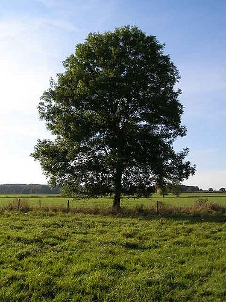
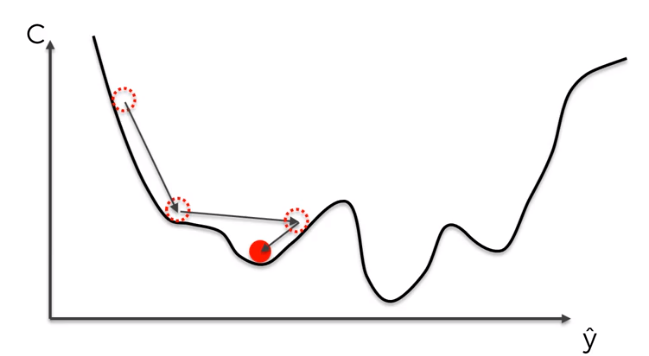
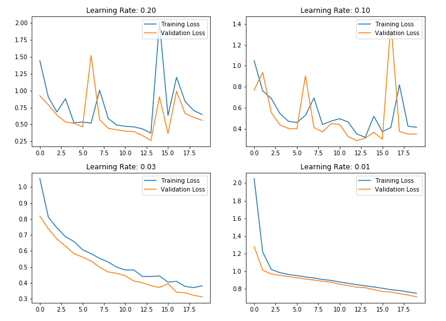

Tutorial 5 (1): Modelling data with simple regression models
Spring 2025
Faculty of Biotechnology and Food Engineering
Technion Israel Institute of Technology
TA: Mattan Hoory

Based on: Chen, Y., Li, Y., Narayan, R., Subramanian, A., & Xie, X. (2016). Gene expression inference with deep learning. Bioinformatics (Oxford, England), 32(12), 1832–1839.
Multiple LR: overview
Scikit-learn API:
Documentation: Scikit-learn Linear Regression


# X, y are 1-D arrays of length N
theta0, theta1 = 0.0, 0.0
lr = 1e-2 # eta
for epoch in epochs:
y_hat = theta1 * X + theta0
residual = y_hat - y
grad0 = 2 / len(X) * residual.sum()
grad1 = 2 / len(X) * (X * residual).sum()
theta0 -= lr * grad0
theta1 -= lr * grad1\(\mathcal{L}(\theta_0,\theta_1)=\frac{1}{N}\sum_{i=1}^{N}(\theta_1x_i+\theta_0-y_i)^2\) \(\frac{\partial \mathcal{L}}{\partial \theta_0} =\frac{2}{N}\sum_{i=1}^{N}(\theta_1x_i+\theta_0-y_i)\) \(\frac{\partial \mathcal{L}}{\partial \theta_1}=\frac{2}{N}\sum_{i=1}^{N}x_i(\theta_1x_i+\theta_0-y_i)\)
00660121 - Medical Diagnostics